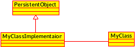

Architecture considerations¶
Dependencies¶
Several dependencies are needed in order to build the module:
OpenTURNS
Sphinx-doc (optional for this doc)
Compilation¶
cd ottemplate
mkdir -p build && cd build
cmake \
-DCMAKE_INSTALL_PREFIX=$PWD/install \
-DOpenTURNS_DIR=$PWD/../../openturns/build/install/lib/cmake/openturns \
..
Source code structure¶
Here is the global class diagram for each layer:
